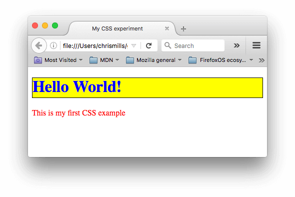

What is CSS
CSS is a language for specifying how documents are presented to users — how they are styled, laid out, etc.
A document is usually a text file structured using a markup language — HTML is the most common markup language, but you will also come across other markup languages such as SVG or XML.
Presenting a document to a user means converting it into a usable form for your audience. Browsers, like Firefox, Chrome or Internet Explorer, are designed to present documents visually, for example, on a computer screen, projector or printer.
Prerequisites
This guide assumes you have the following basic background:
- A general understanding of the Internet and the World Wide Web (WWW).
- Good working knowledge of HyperText Markup Language (HTML).
How does CSS affect HTML?
Web browsers apply CSS rules to a document to affect how they are displayed. A CSS rule is formed from:
- A set of properties, which have values set to update how the HTML content is displayed, for example, I want my element's width to be 50% of its parent element, and its background to be red.
- A selector, which selects the element(s) you want to apply the updated property values to. For example, I want to apply my CSS rule to all the paragraphs in my HTML document.
A set of CSS rules contained within a stylesheet determines how a webpage should look.
A quick CSS example
The above descriptions may or may not have made sense, so let's make sure things are clear by presenting a quick example. First of all, let's take a simple HTML document, containing an <h1> and a <p> (notice that a stylesheet is applied to the HTML using a <link> element):
<!DOCTYPE html>
<html>
<head>
<meta charset="utf-8">
<title>My CSS experiment</title>
<link rel="stylesheet" href="style.css">
</head>
<body>
<h1>Hello World!</h1>
<p>This is my first CSS example</p>
</body>
</html>
Now let's look at a very simple CSS example containing two rules:
h1 {
color: blue;
background-color: yellow;
border: 1px solid black;
}
p {
color: red;
}
The first rule starts with an h1 selector, which means that it will apply its property values to the <h1> element. It contains three properties and their values (each property/value pair is called a declaration):
- The first one sets the text color to blue.
- The second sets the background color to yellow.
- The third one puts a border around the header that is 1 pixel wide, solid (not dotted, or dashed, etc.), and colored black.
The second rule starts with a p selector, which means that it will apply its property values to the <p> element. It contains one declaration, which sets the text color to red.
In a web browser, the code above would produce the following output:
This isn't too pretty, but at least it starts to give you an idea of how CSS works.
How does CSS actually work?
When a browser displays a document, it must combine the document's content with its style information. It processes the document in two stages:
- The browser converts HTML and CSS into the DOM (Document Object Model). The DOM represents the document in the computer's memory. It combines the document's content with its style.
- The browser displays the contents of the DOM.

CSS declarations
Setting CSS properties to specific values is the core function of the CSS language. The CSS engine calculates which declarations apply to every single element of a page in order to appropriately lay it out and style it. What is important to remember is that both properties and values are case-sensitive in CSS. The property and value in each pair is separated by a colon (:)

CSS declaration blocks
Declarations are grouped in blocks, with each set of declarations being wrapped by an opening curly brace, ({) and a closing one (}).
Each declaration contained inside a declaration block has to be separated by a semi-colon (;), otherwise the code won't work (or will at least give unexpected results.) The last declaration of a block doesn't need to be terminated by a semi-colon, though it is often considered good style to do so as it prevents forgetting to add it when extending the block with another declaration.

CSS selectors and rules
We are missing one part of the puzzle — we need to discuss how to tell our declaration blocks which elements they should be applied to. This is done by prefixing each declaration block with a selector — a pattern that matches some elements on the page. The associated declarations will be applied to those elements only. The selector plus the declaration block is called a ruleset, or often simply just a rule.

White space
White space means actual spaces, tabs and new lines. You can add white space to make your stylesheets more readable.
In the same manner as HTML, the browser tends to ignore much of the whitespace inside your CSS; a lot of the whitespace is just there to aid readability. In our first example below we have each declaration (and rule start/end) on its own line — this is arguably a good way to write CSS, as it makes it easy to maintain and understand:
body {
font: 1em/150% Helvetica, Arial, sans-serif;
padding: 1em;
margin: 0 auto;
max-width: 33em;
}
@media (min-width: 70em) {
body {
font-size: 130%;
}
}
h1 {
font-size: 1.5em;
}
div p, #id:first-line {
background-color: red;
background-style: none
}
div p {
margin: 0;
padding: 1em;
}
div p + p {
padding-top: 0;
}
You could write exactly the same CSS like so, with most of the whitespace removed — this is functionally identical to the first example, but I'm sure you'll agree that it is somewhat harder to read:
body {font: 1em/150% Helvetica, Arial, sans-serif; padding: 1em; margin: 0 auto; max-width: 33em;}
@media (min-width: 70em) { body {font-size: 130%;} }
h1 {font-size: 1.5em;}
div p, #id:first-line {background-color: red; background-style: none}
div p {margin: 0; padding: 1em;}
div p + p {padding-top: 0;}
The whitespace you do need to be careful of in CSS is the whitespace around the properties and their values. For example, the following is valid CSS:
margin: 0 auto;
padding-left: 10px;
But the following is invalid:
margin: 0auto;
padding- left: 10px;
Comments
As with HTML, you are encouraged to make comments in your CSS, to help you understand how your code works when coming back to it after several months, and to help others understand it. Comments are also useful for temporarily commenting out certain parts of the code for testing purposes, for example if you are trying to find which part of your code is causing an error.
Comments in CSS begin with /* and end with */
/* Handle basic element styling */
/* -------------------------------------------------------------------------------------------- */
body {font: 1em/150% Helvetica, Arial, sans-serif; padding: 1em; margin: 0 auto; max-width: 33em;}
@media (min-width: 70em) {
/* Let's special case the global font size. On large screen or window,
we increase the font size for better readability */
body {font-size: 130%;}
}
h1 {font-size: 1.5em;}
/* Handle specific elements nested in the DOM */
/* -------------------------------------------------------------------------------------------- */
div p, #id:first-line {background-color: red; background-style: none}
div p {margin : 0; padding : 1em;}
div p + p {padding-top : 0; }
Shorthand
Some properties like font, background, padding, border, and margin are called shorthand properties — this is because they allow you to set several property values in a single line, saving time and making your code neater in the process.
For example, this line:
/* in shorthand like padding and margin, the values are applied
in the order top, right, bottom, left (the same order as an analog clock). There are also other
shorthand types, for example two values, which set for example
the padding for top/bottom, then left/right */
padding: 10px 15px 15px 5px;
Does the same thing as all these:
padding-top: 10px;
padding-right: 15px;
padding-bottom: 15px;
padding-left: 5px;
Whereas this line:
background: red url(bg-graphic.png) 10px 10px repeat-x fixed;
Does the same thing as all these:
background-color: red;
background-image: url(bg-graphic.png);
background-position: 10px 10px;
background-repeat: repeat-x;
background-scroll: fixed;
Reference
All the documentation in this page is taken from MDN